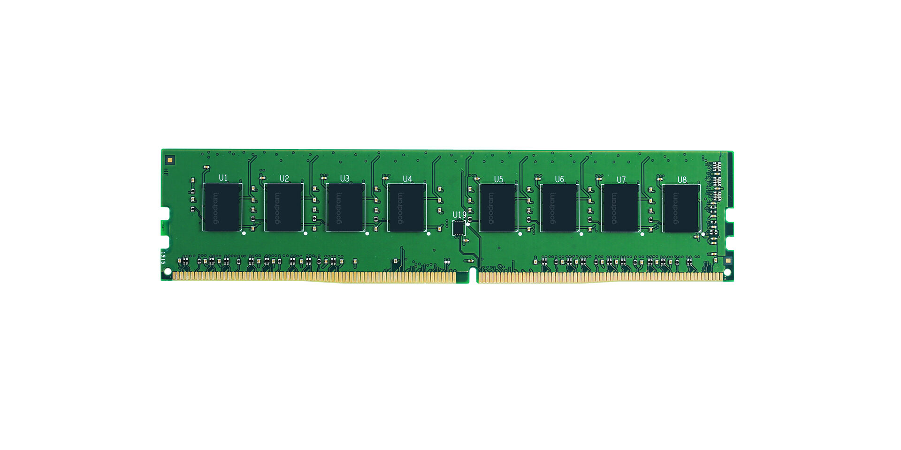

Pamięć DDR 4
Pamięci RAM DDR4. Jest to najpopularniejsza obecnie pamięć operacyjna, ale z uwagi na to, że poszczególne standardy RAM nie są ze sobą kompatybilne, RAM DDR4 stosowany jest głównie w nowszych urządzeniach (w starszych konieczna byłaby większa modyfikacja sprzętowa – przede wszystkim wymiana płyty głównej). Obsługa pamięci RAM DDR4 stała się powszechna w 2014 roku.

Pamięć RAM DDR3 a DDR4 – kluczowe różnice
* Jeszcze bardziej obniżono napięcie. W przypadku pamięci RAM DDR4 jest to 1.2 V.
* Pamięć RAM DDR4 ma o około 20% niższe zapotrzebowanie na energię.
* Przepustowość pamięci DDR4 jest wyższa.
* Liczba pinów wzrosła z 240 do 288 w przypadku pamięci RAM DDR4.
* Częstotliwość działania pamięci RAM DDR4 może wynosić od 2133 MHz w górę. Teoretycznie górną granicą było 3200 MHz, ale obecnie w sprzedaży bez problemu znajdziemy kości o częstotliwości pracy 3400 lub 3600 MHz.